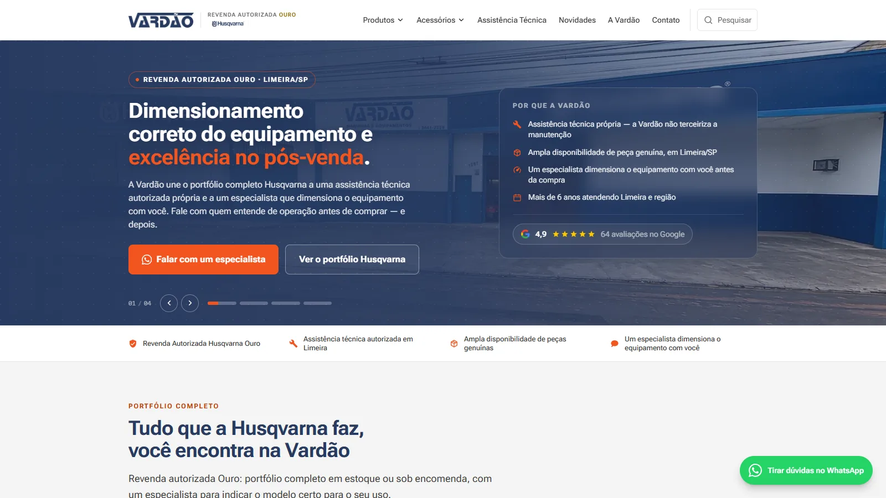
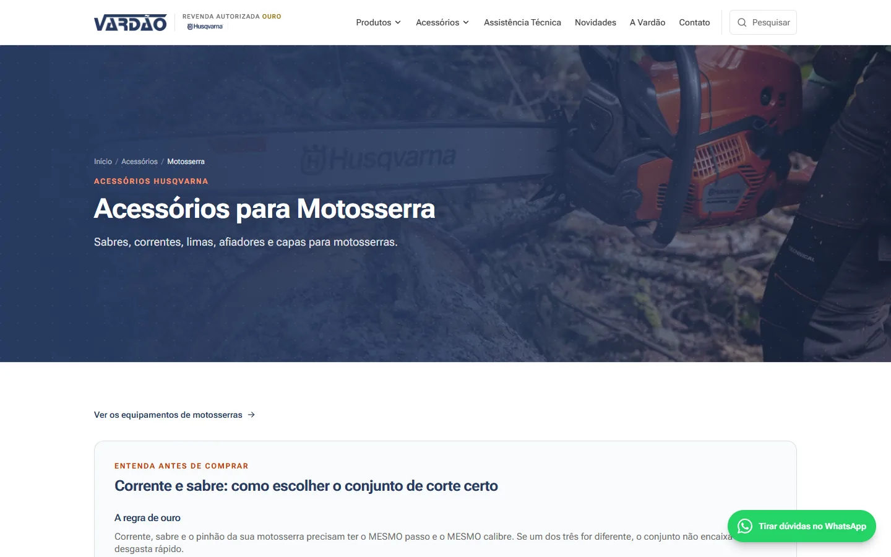
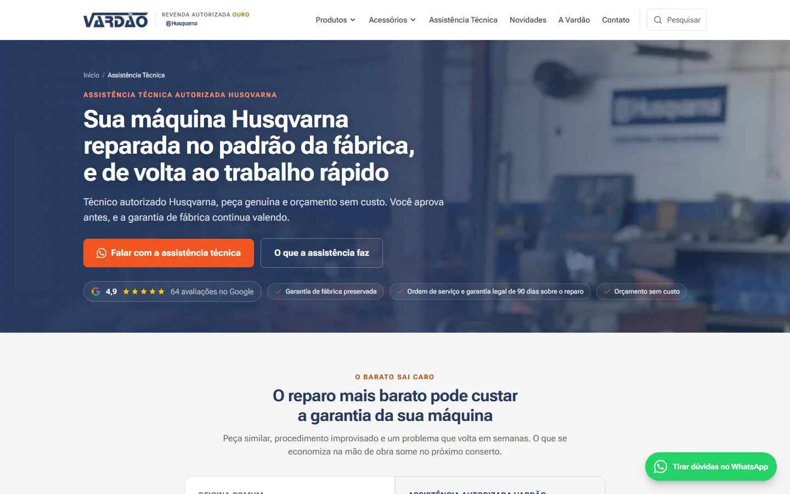
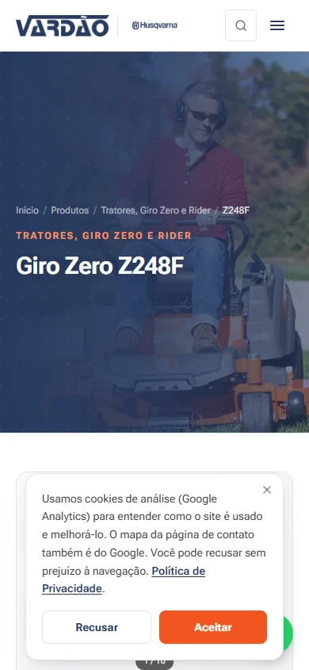

Site da Vardão Máquinas
O site institucional da empresa onde trabalho, a Vardão Máquinas, revenda e assistência técnica autorizada Husqvarna em Limeira. Ele apresenta a empresa, a oficina e as linhas de produtos para o cliente encontrar a empresa no Google e levar a conversa direto para o WhatsApp. Complementa o Vardão Central, que atende a operação interna.
Abrir o site
Página inicial do site, em produção.
O problema
A Vardão é uma revenda Husqvarna nível Ouro, com oficina própria e peças genuínas no mesmo endereço. Mas quem procura uma motosserra, um trator cortador ou um conserto pesquisa no Google antes de ir à loja. Uma empresa sem site completo não aparece nessa busca, e quem chega precisa entender depressa quem é a empresa, o que ela vende, se conserta o que a pessoa já tem e como falar com alguém.
A solução
Um site institucional completo: a história e os números da empresa, a assistência técnica explicada, as linhas de produtos, as avaliações de clientes e o contato em todas as páginas. As páginas são geradas a partir de dados tipados, com título, descrição e dados estruturados corretos para a busca, e um botão que leva o cliente ao vendedor com a mensagem já preenchida.
O que o site faz
Apresenta a empresa
A página A Vardão conta quem é a empresa: revenda autorizada Husqvarna nível Ouro desde 2020, com loja, oficina e peças genuínas no mesmo endereço, como a Vardão trabalha e como chegar.
Mostra a assistência técnica
Página própria para a oficina autorizada: o que a assistência resolve, garantia de fábrica preservada e orçamento sem custo, aprovado antes do serviço.
Apresenta as linhas de produtos
Jardim, floresta, robótica, agricultura familiar e bateria, em fichas que mostram o uso indicado e levam ao especialista, sem o cliente ter de procurar o contato.
Reúne a prova social
Avaliações públicas de clientes no Google, para quem ainda não conhece a loja ver o que outros dizem.
Ajuda a escolher
Artigos de comparação e de escolha, busca dentro do site e guias de peças e acessórios por modelo, para o cliente decidir com segurança antes de falar com o vendedor.
WhatsApp com contexto
Mensagem pré-preenchida, conforme o que o cliente estava vendo, para o vendedor entrar na conversa já sabendo o assunto.
Telas



Decisões
Páginas geradas a partir de dados
Os produtos, os artigos e as páginas da empresa ficam em arquivos de dados tipados em TypeScript, e uma única página de modelo gera cada rota na hora do build. Adicionar um produto novo é preencher um objeto, e o sitemap, o título, os dados estruturados e a navegação seguem sozinhos. O ganho é consistência: nenhuma página depende de alguém lembrar de configurar o SEO.
WhatsApp com a pergunta já feita
Toda chamada para o WhatsApp carrega o que o cliente estava olhando: o produto, a categoria, o artigo ou a assistência técnica. Isso troca o "oi, tudo bem?" por uma conversa que já começa no assunto, e o vendedor sabe de qual página o contato veio.
Cookies com consentimento explícito
O script do Google Analytics é carregado em toda visita, mas com o Consent Mode do Google começando como negado: enquanto o visitante não aceita, os cookies de análise e de anúncios não são gravados. Aceitar ou recusar só atualiza esse consentimento. O mapa do Google, na página de contato, só é carregado se o visitante já aceitou os cookies de análise ou se clicar em "Carregar o mapa". Recusar não tira nada do site, e a escolha fica salva no navegador e pode ser mudada depois por um link no rodapé.
Segurança nos cabeçalhos
O site envia uma política de segurança de conteúdo que restringe as origens permitidas, além de proteção contra ser embutido em outras páginas e contra troca de tipo de arquivo. Em desenvolvimento ela fica mais permissiva do que em produção.
Peça certa ou nenhuma
No guia de peças e acessórios vale o mesmo princípio do balcão do Vardão Central: sugerir só quando há certeza. Em tratores e giro zero, por exemplo, o cruzamento é feito só pelo código do modelo, e não por semelhança de nome. Prefiro não mostrar um acessório a mostrar o errado.
Números
Contagens feitas no sitemap público do site (vardaomaquinas.com.br/sitemap.xml) em 10/11/2026. O código do site é privado e não foi usado para estas contagens. Os 7 endereços que não entram nos três grupos são as páginas institucionais: início, assistência técnica, lista de novidades, a empresa, contato, avaliações de clientes e política de privacidade.